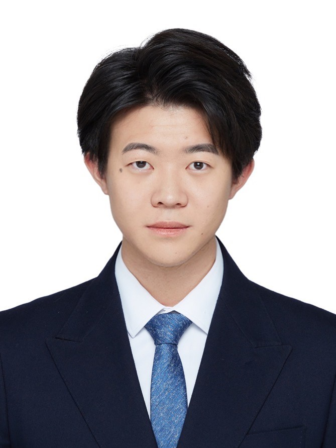

Tong ChenMaster of Philosophy
Department of Electronic Engineering (ECE) |
 |


Biography
I am a M.Phil. student at Department of Electronic Engineering (ECE), The Chinese University of Hong Kong, advised by Prof. Hongliang Ren. I also work closely with Dr. Mobarakol Islam at WEISS Centre, University College London. Previously, I received the B. Sc. degree in Opto-Electronics Information Science and Engineering from Beijing Institute of Technology in 2021, advised by Prof. Kun Gao. I was also an undergraduate research intern at Department of Electrical and Computer Engineering, University of Miami, working with Prof. Mohamed Abdel-Mottaleb.
My research interests include artificial intelligence and its applications in medical image computing and neuroimaging. I recently work on brain decoding and low-level vision.
News
- [06/2023] One paper LLCaps is accepted by MICCAI 2023 (Oral presentation).
Selected Publications [Find full list at Google Scholar]
-
Rethinking Exemplars for Continual Semantic Segmentation in Endoscopy Scenes: Entropy-based Mini-Batch Pseudo-Replay
Guankun Wang†, Long Bai†, Yanan Wu, Tong Chen, Hongliang Ren
Computers in Biology and Medicine (CBM), 2023.
-
LLCaps: Learning to Illuminate Low-Light Capsule Endoscopy with Curved Wavelet Attention and Reverse Diffusion
Long Bai†, Tong Chen†, Yanan Wu, An Wang, Mobarakol Islam, Hongliang Ren
Medical Image Computing and Computer Assisted Intervention (MICCAI), 2023.
(Oral, Top 3%)
[Code]
Selected Awards
| BIT Academic Excellent Scholarship, 2021 |
| BIT Academic Progress Scholarship, 2018 |
Teaching
Teaching Assistant:| 2023-2024 | Fall | ELEC5622 | Signals, Software and Health |